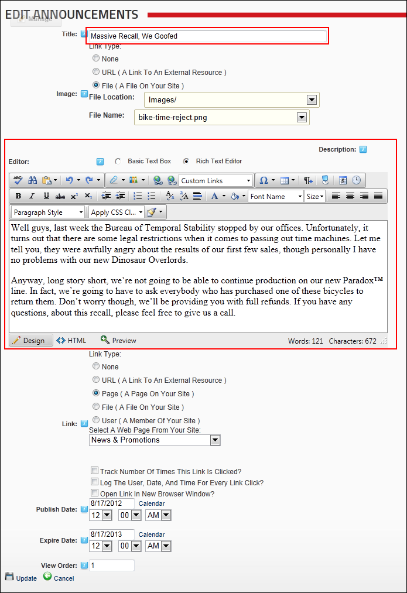
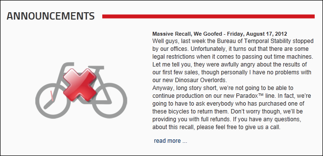

Adding an Announcement
How to add an announcement to the Announcements module.
- Select
 Add New Announcement from the module actions menu.
Add New Announcement from the module actions menu.
- Complete the following mandatory fields:
- In the Title text box, enter a title for the announcement.
- In the Description Editor, enter a description for the announcement.

- The following optional settings are also available:
- At Image, set the link to display an image on this announcement or select None if no image is required. See "Setting a File Link"
- At Link set the Read more... link for this announcement or select None for no link. See "About the Link Control"
- At Publish Date, set these options:
- Click the Calendar link and select the date when the announcement will be published on the module. The publish date is displayed beside the announcement title in the default template.
- Optional. Select the Hour, Minute and AM/PM to set a publish time. The default time is 12:00 AM.
- At Expire Date, set these options:
- Click the Calendar link and select the date when the announcement will expire from the module. Expired announcements can still be viewed and managed by content editors.
- Optional. Select the Hour, Minute and AM/PM to set an expiry time. The default time is 12:00 AM.
- In the View Order text box, enter a number to order this announcement. E.g. 0 = First announcement; 1 = Second announcement, etc. This will override the default order that lists announcements from most recent publish date to oldest publish date.
-
Click the OK button to confirm.

Adding an Announcement